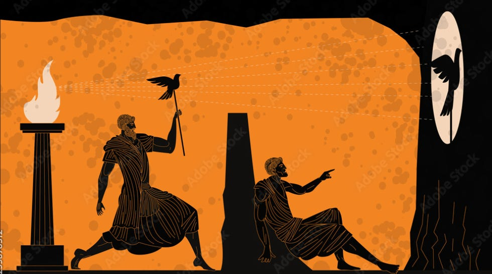

Introduction
Il y a quelques semaines, un ami m’a dit : “Ah mais toi, tu es vraiment ultra sociable.”
J’ai souri. Parce que dans un autre cercle, celui de mes années de lycée, j’aurais été décrit exactement à l’inverse. Même personne, mais deux identités a priori contradictoires.
J’ai plusieurs cercles sociaux constitués à des époques différentes : le lycée, la prépa, les études supérieures, le cadre professionnel. Dans chacun, les gens m’ont connu à un âge différent et donc m’ont attribué une identité différente.
Cela pose une question : qu’est-ce que l’identité, au fond ? Qu’est-ce qui reste quand tout change ?
La réponse touche peut-être à quelque chose dont la philosophie ne peut pas résoudre seule. À une question de croyance, presque spirituelle. Croire ou non qu’il existe quelque chose de non matériel, une âme, un fil conducteur qui traverse les années malgré les mutations du corps et de l’esprit.
C’est peut-être une croyance utile. Je ne trancherai pas ici.
La question à laquelle je souhaite répondre aujourd’hui est plus pratique : à quoi est-ce que je m’identifie, consciemment ou non ? Et est-ce que ces choix me servent ?
L’illusion de permanence
Héraclite l’avait dit : on ne se baigne jamais deux fois dans le même fleuve. Montaigne, deux millénaires plus tard, a poussé l’image encore plus loin :
Car tant plus il serrera et pressera ce qui de sa nature coule par tout, tant plus il perdra ce qu’il vouloit tenir et empoigner.
Montaigne
Vouloir saisir ce que l’on est revient à empoigner de l’eau. Les cellules se régénèrent. La manière de penser évolue.
Le bouddhisme, que j’ai exploré dans Cogito #004, va jusqu’à nier l’existence d’un soi stable : anattā, le non-soi. Et les neurosciences confirment qu’il n’existe pas de “moi central” dans le cerveau. Le soi est une narration que l’esprit construit sur lui-même.
Ce paradoxe est au cœur de la question identitaire : tout change, mais on se sent le même. Et si l’identité est une fiction utile, nécessaire peut-être, alors la vraie question n’est pas qu’est-ce que je suis, mais à quoi est-ce que je choisis de m’identifier .
S’identifier à sa souffrance
Le premier piège est le plus silencieux.
Chris Williamson le formule avec une précision que j’aime beaucoup :
Être touché par ce qu’il t’arrive, ce n’est pas être une victime, c’est être humain. En faire une partie de ton identité, c’est là qu’intervient le terme ‘victimisation’.
Chris Williamson
Vivre une dépression, traverser un échec, porter une blessure, c’est humain. Mais il y a un glissement insidieux entre traverser quelque chose et être quelque chose. “Je traverse une période difficile” et “je suis dépressif” ne mobilisent pas les mêmes ressources. La deuxième formulation inscrit l’état dans la personne. Et une identité ne se quitte pas comme on dépasse une période : elle demande une forme de deuil.
Parce qu’une identité est, par définition, supposée être stable. Cela demande un effort qui va bien au-delà du simple soin.
Ce phénomène se retrouve dans certaines dynamiques de groupe. Certains cercles d’amis ou familiaux, inconsciemment n’ont pas intérêt à ce que l’on change. Notre évolution les confronte à leur propre stagnation. Ils nous ramènent à ce qu’on était, comme des crabes qui tirent vers le bas celui qui tente de sortir du seau. Ce n’est pas toujours de la malveillance. C’est souvent la mécanique de l’identité collective qui cherche à se maintenir.
S’identifier à ses idées
Il y a une forme encore plus subtile d’identification dont on parle peu : celle aux idées.
Nietzsche l’a formulé dans Humain, trop humain :
Les convictions sont des ennemis de la vérité plus dangereux que les mensonges.
Nietzsche

Un mensonge peut être révélé. Une conviction, non, parce qu’elle n’est pas tenue pour un mensonge. Elle est tenue pour ce que l’on est. La remettre en question, c’est se remettre en question soi-même. Et ça, à nouveau, c’est une opération identitaire, pas intellectuelle.
Simone Weil, philosophe du XXe siècle, l’a décrit dans sa Note sur la suppression générale des partis politiques : on n’adhère pas à un parti parce qu’on a pesé chaque idée de son programme. On adhère parce qu’on veut appartenir à un groupe qui nous ressemble. Ensuite, les idées deviennent secondaires, défendues non parce qu’elles sont justes, mais parce qu’elles sont les nôtres. La loyauté au parti, écrit-elle, entraîne nécessairement une déloyauté envers soi-même. Et à grande échelle : “l’opération de prendre parti a remplacé l’opération de penser.”
Le langage comme architecture de soi
Si l’identité est en partie ce qu’on se raconte sur soi-même, le vocabulaire disponible détermine la qualité de ce récit.
Tu ne comprendras jamais une culture sans d’abord comprendre sa langue. Et tu ne te comprendras jamais toi-même sans comprendre les mots que tu utilises pour te décrire.
Chris Williamson
Ce n’est pas une intuition vague, c’est documenté. La neuroscientifique Lisa Feldman Barrett a montré que les personnes disposant d’un vocabulaire émotionnel plus riche traversent leurs états intérieurs avec plus de précision et les régulent mieux. Avoir un seul mot pour “ça ne va pas” et en avoir dix : frustration, honte, épuisement, mélancolie, angoisse… Ce n’est pas la même expérience intérieure. Ce n’est pas le même accès à soi-même.
Ce que cela implique pour l’identité : plus on dispose de mots précis pour décrire ce qu’on valorise, ce qu’on refuse, ce qu’on devient, plus on peut choisir consciemment à quoi s’identifier. Et plus on peut repérer, en temps réel, quand on se laisse glisser dans une identification qui ne nous sert pas.
Le discours intérieur ne s’arrête jamais. La question, c’est avec quels mots il tourne et quel niveau de conscience.
Conclusion
Je ne prétends pas avoir une réponse définitive à la question de “ce qui reste”. Ce qui “reste” est peut-être indémontrable. C’est peut-être une croyance, un fil narratif que l’esprit tisse pour maintenir la continuité du soi.
Ce qui me paraît certain, en revanche, c’est que nous nous identifions à quelque chose, en permanence. Nous nous racontons une histoire sur nous-mêmes. Et que nous le fassions consciemment ou non, cette histoire a des effets réels.
Dans Cogito #001, j’avais développé l’idée que l’identité se construit par itérations, qu’on l’approche progressivement en agissant, en tentant, en s’ajustant.
Ce processus demande une chose : savoir à quoi on s’identifie en cours de route.
Parce que s’identifier à sa souffrance la rend permanente. S’identifier à ses convictions rend l’honnêteté intellectuelle impossible. Et s’identifier à un groupe qui se définit contre un autre rend la paix impossible.
Ce à quoi tu t’identifies te tient. La question, c’est de savoir si cela te tient debout, ou si cela te tient en cage.
À bientôt pour de nouvelles réflexions
Elouan